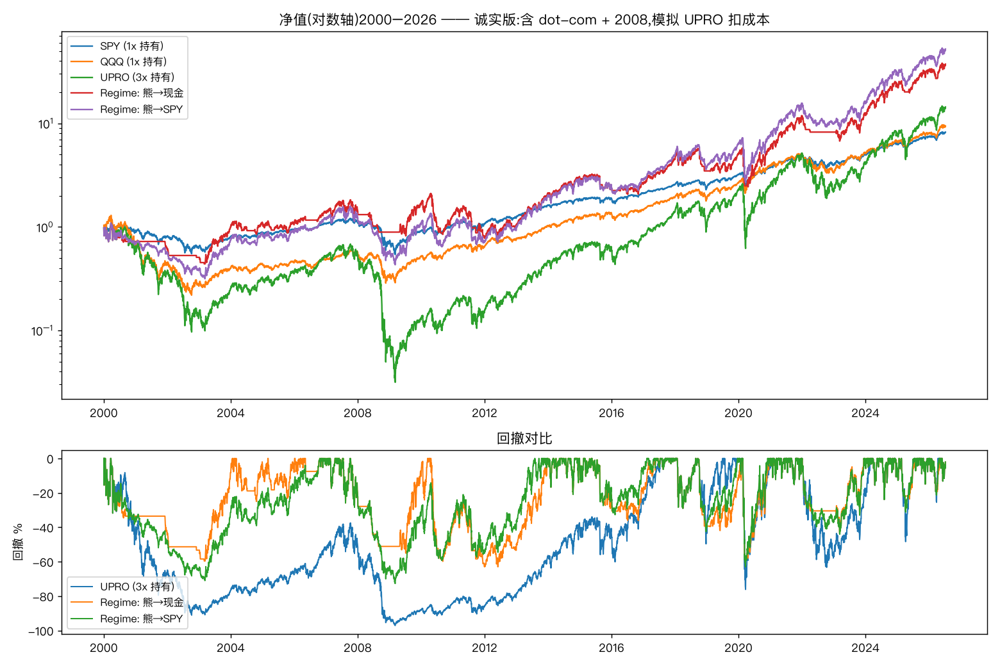

Quant Research · Replication Study
当一个策略的展示窗口恰好绕开了历史上两次最大的崩盘,它究竟还剩下什么?
某财经博主推广一套 SPY/UPRO 杠杆择时策略(内核是 Gayed 2016《Leverage for the Long Run》): 趋势判多头时持 3 倍杠杆,判空头时降险。其展示的回测起点为 2010 / 2017 年。 我把同一套规则的窗口拉回 2000 年,使其必须穿过 dot-com 泡沫与 2008 金融危机。
但结论并非"这套东西全是假的"。趋势择时本身确实有效(全样本年化 16.2% vs SPY 的 8.3%); 真正的问题在于:它的全部价值都来自避开 2000 和 2008 —— 而这恰恰是博主窗口里没有的东西。
换言之:真实表现只会比下表更差,不会更好。把不确定性放在对自己结论不利的一侧,结论才站得住。
| 策略 | 年化 | 最大回撤 | 波动 | Sharpe | MAR | 累计 |
|---|---|---|---|---|---|---|
| SPY(1x 持有) | 8.3% | −55.2% | 19.3% | 0.51 | 0.15 | 729% |
| QQQ(1x 持有) | 8.7% | −83.0% | 26.8% | 0.45 | 0.10 | 808% |
| UPRO(3x 裸持) | 10.7% | −97.1% | 57.9% | 0.47 | 0.11 | 1381% |
| Regime:熊→现金 | 14.8% | −63.0% | 36.6% | 0.56 | 0.23 | 3741% |
| Regime:熊→SPY | 16.2% | −72.7% | 39.6% | 0.58 | 0.22 | 5271% |
注意 3x 裸持那一行:承担了 57.9% 的年化波动,换回来的 Sharpe(0.47)却低于直接买 SPY(0.51)。 杠杆放大的是波动,不是风险调整后的收益。

| 窗口 | UPRO 3x 裸持年化 | 最大回撤 |
|---|---|---|
| 2010–2026(博主窗口) | 32.8% | −76.2% |
| 2017–2026(博主另一窗口) | 35.2% | −76.2% |
| 2000–2026(含两次崩盘) | 10.7% | −97.1% |
3 倍的年化差距,完全来自起点的选择 —— 而不是策略本身有任何不同。 UPRO 裸持的关键年份:2000 −39.5% / 2001 −42.0% / 2002 −61.8% / 2008 −85.3%。
而在完整的 2000–2026 样本里,关系彻底反转:择时版(16.2%)大幅跑赢裸持(10.7%)。 这说明择时的全部价值都来自"避开 2000 和 2008" —— 一个在他的展示窗口里 无法被观察到的价值。他用一个不需要保险的时期,去推销保险,却又用裸持杠杆的收益做招牌。